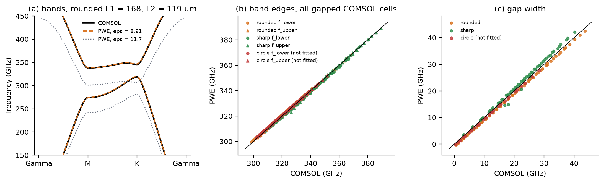
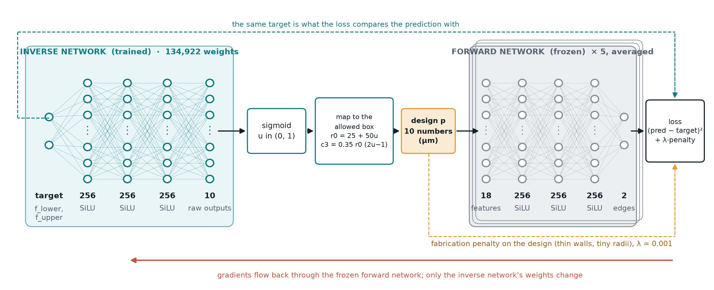
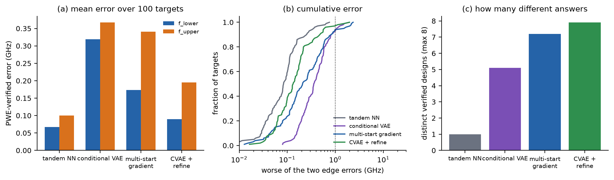
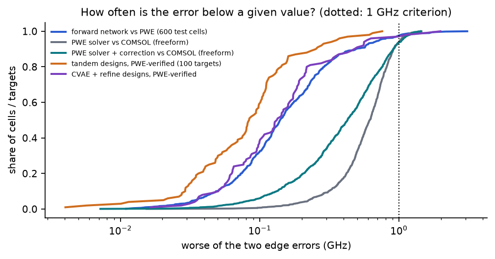
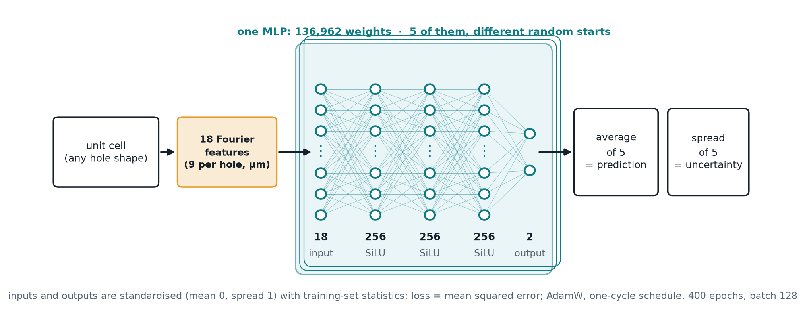
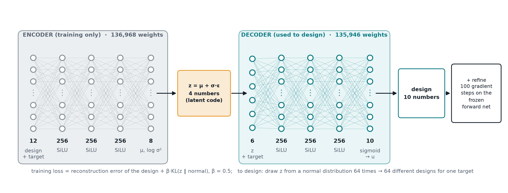
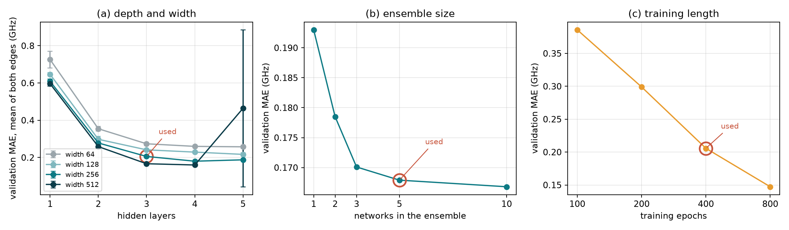

Design a crystal that blocks exactly the right frequencies
This course assumes you know nothing. Read the chapters in order: each one builds on the last, and each has something to play with. By the end you should be able to explain every part of your thesis.
The setting. 6G radios will use carrier frequencies around 0.3 terahertz (300 GHz), because there is a lot of unused bandwidth there. To route such signals on a chip you need a waveguide that does not leak and does not reflect at corners.
The device. A thin slab of silicon with a repeating pattern of air holes: a photonic crystal. The picture is a top view. One repeat of the pattern is the unit cell (dashed rhombus, 242.5 µm wide) and it contains two holes, A and B.
The key effect. If A and B differ, the crystal gets a band gap: a range of frequencies that cannot travel through it. Along the border between two such crystals, light in that range travels robustly, even around sharp bends. That border is the waveguide.
The problem statement
Given a target band gap, its lower edge flower and upper edge fupper in GHz, find several fabricable hole shapes whose simulated band edges hit the target within 1 GHz, using far fewer slow full-wave (COMSOL) simulations than a parameter sweep would need.
Forward (shape → band edges) is what a simulator does: physics, slow but straightforward. Inverse (band edges → shape) is what a designer wants, and there is no formula for it. Your project builds that inverse with machine learning.
The whole thesis in seven steps
| # | What was done | Why | Result | Chapter |
|---|---|---|---|---|
| 1 | Audited the inherited 2-number model (triangle sizes L1, L2) | Check before building on it | A Gaussian process beat the old neural network by about 100× | 11, 13 |
| 2 | Wrote a fast solver (plane-wave expansion, PWE) | COMSOL is too slow for thousands of examples | 0.2 s per cell; within 0.74 / 0.32 GHz of COMSOL | 7–9 |
| 3 | Described any 3-fold hole with Fourier numbers | Go beyond triangles | Circles, triangles and new shapes in one description | 5, 6 |
| 4 | Generated 6,000 training cells with PWE | Machine learning needs data | The dataset | 10 |
| 5 | Trained a forward network and 4 inverse methods | Turn targets into shapes | Tandem reaches the target 99% of the time; CVAE + refine gives ~8 different designs | 12, 14–16 |
| 6 | Corrected PWE with COMSOL data (multi-fidelity) | Make the fast solver trustworthy | 0.17 / 0.24 GHz from COMSOL with the correction | 17 |
| 7 | Simulated AI designs in COMSOL | Independent proof | 12 of 14 designs within 1 GHz of their target | 18 |
Chapter 21 shows where each of these steps lives in the project folder and which command runs it.
What is new in your work
- Freeform shapes: earlier ML work on these crystals only varied one or two triangle sizes; yours designs the whole hole outline.
- Independent checking: every proposed design is re-simulated with a physics solver, not judged by the network that made it.
- Several designs per target: useful for fabrication.
- Cheap + expensive data together: thousands of PWE cells corrected by a few hundred COMSOL cells.
- Honest baselines: errors reported in GHz and compared with simple models.
What a terahertz wave is
Before crystals: what a wave is, how fast it wiggles, how long it is, and what silicon does to it.
Frequency, wavelength, speed
A wave is a pattern that repeats in space and in time. Think of ripples on water: at one spot the water goes up and down (time), and at one moment the surface has crests and troughs (space).
- Frequency f: how many times per second the wave goes up and down. Unit hertz (Hz). 1 GHz = 109 Hz, 1 THz = 1012 Hz = 1000 GHz.
- Wavelength λ: the distance from one crest to the next.
- Speed v: how fast a crest moves. They are linked by v = f · λ.
Light, radio and terahertz waves are all electromagnetic waves: oscillating electric and magnetic fields. In empty space they all travel at c = 3 × 108 m/s. They differ only in frequency.
A 300 GHz wave in air: λ = c / f = (3 × 108 m/s) / (3 × 1011 Hz) = 10-3 m = 1 mm = 1000 µm.
So 0.3 THz waves are about 1 mm long in air, a few times bigger than your unit cell (242.5 µm).
What a material does: refractive index and permittivity
Inside a material light slows down. The refractive index n says by how much: v = c / n. The frequency stays the same, so the wavelength shrinks: λmaterial = λair / n.
Physicists often use the relative permittivity ε instead (how strongly the material responds to an electric field). For the materials here, ε = n². Silicon at terahertz frequencies: n ≈ 3.42, ε ≈ 11.7. Air: n = ε = 1.
The big difference between silicon (ε ≈ 11.7) and air (ε = 1) is what makes the holes scatter light strongly. That contrast is the raw material of a photonic crystal.
Try it: the same wave in air and in silicon
The teal ruler marks your lattice period a = 242.5 µm. Inside silicon the wavelength is only about one to one-and-a-half unit cells: the holes are just the right size to interfere with the wave. That is why the lattice constant was chosen this way.
Two facts used later
1. Scaling. Maxwell's equations (the laws of electromagnetism) have no built-in length. If you make the whole crystal 2× bigger, every frequency becomes 2× lower (as long as the material behaves the same at the new frequency). So a design can be moved to another band by scaling it.
2. Polarisation. In a 2D model, light splits into two independent kinds. In TE (as used in your solver and COMSOL model) the electric field lies in the plane of the slab and the magnetic field points out of it. Only this kind has the band gap we use, so only it is computed.
Go deeper: why 8.91 and not 11.7 later on
A real device is a thin silicon slab, so part of the wave's field sits in the air above and below. A 2D model cannot see that, so it uses an effective permittivity a bit lower than bulk silicon. Your PWE solver matches COMSOL with ε = 8.91 (n = 2.99); Shalaev et al. (2019) used n = 2.965 in a similar 2D model. Chapter 8 returns to this.
Why a repeating pattern blocks some frequencies
A band gap comes from interference: many small reflections adding up. The band diagram is the map that shows which frequencies can travel.
Interference
When two waves meet, they add. Crest on crest makes a bigger crest (constructive); crest on trough cancels (destructive).
Many weak reflections make one strong one
Each hole reflects a little of the wave. In a random arrangement those reflections point every which way and mostly cancel. In a perfectly repeating arrangement, at certain frequencies all the small reflections come back exactly in step and add up to a total reflection. A wave at that frequency cannot get through: it is reflected back no matter how it enters. That range of frequencies is the band gap (also called a stop band).
In one dimension (a stack of layers) this happens when half a wavelength fits one period, the Bragg condition. A 2D crystal does the same in every direction at once; a complete band gap means it works for all directions.
Bloch waves: the waves that do exist
Inside a perfectly repeating crystal, the waves that can travel have a special form (Bloch's theorem): a plain wave multiplied by a pattern that repeats with the unit cell.
Because the pattern repeats, adding certain amounts to k gives the same wave. All the distinct k values fit inside one hexagon called the Brillouin zone. So to know everything about the crystal, you only need k inside that hexagon.
The band diagram
For each k there are only certain allowed frequencies, like the notes of a string. Sort them: the lowest is band 1, the next band 2. Plotting them as k walks along the edge of the important part of the hexagon (Γ → M → K → Γ) gives the band diagram. Where no band exists for any k, there is a gap.
Try it: change the two holes
Circles keep it simple. These bands were computed with your PWE solver.
Reading the diagram
flower = the highest point of band 1, anywhere along the path. fupper = the lowest point of band 2. If fupper > flower, the frequencies in between are forbidden for every direction: that is the gap your project designs.
Try equal holes: bands 1 and 2 touch at K (a Dirac point, chapter 4) and there is no gap. Make them more different: the gap opens wider.
Γ (gamma) is the centre of the Brillouin zone (k = 0: every cell in step). M is the middle of an edge, K a corner. By symmetry, the orange triangle contains every distinct direction, so walking its edge Γ→M→K→Γ is enough.
Go deeper: numbers for the Brillouin zone
The lattice vectors are a1 = a(1, 0) and a2 = a(½, √3/2) with a = 242.5 µm. The reciprocal vectors b1, b2 satisfy ai·bj = 2π if i = j, else 0; their length is 4π/(√3 a) = 0.0299 µm-1.
Distances in the zone: |ΓM| = 2π/(√3 a) = 0.0150 µm-1, |ΓK| = 4π/(3a) = 0.0173 µm-1.
Rough check of where the gap must be: a wave with k = |ΓM| in a material of average index 2.2–2.6 has f = c·k/(2π n) ≈ 714 GHz / n ≈ 275–325 GHz. That is exactly where your gaps sit: the gap opens where the wave's wavelength matches the lattice.
Why two different holes make a robust waveguide
This chapter explains the word "valley" in your title, and why every hole must keep its 120° symmetry.
Step 1: equal holes give a Dirac cone
Your lattice is a honeycomb, like graphene: two sites per cell. When holes A and B are identical, the crystal looks the same after swapping A and B (inversion symmetry) and after turning by 120° (C3 symmetry). These symmetries force bands 1 and 2 to touch at the K points, forming a cone shape in 3D plots: a Dirac cone.
Step 2: unequal holes open the gap
Make A and B different: swapping them no longer gives the same crystal, inversion symmetry is broken, and the cone splits open. The gap that appears at K is the one your project designs. Bigger difference → bigger gap.
Equal holes (50 / 50 µm)
Unequal holes (60 / 40 µm)
Step 3: the two valleys
The hexagon has two kinds of corners, K and K′ (they alternate). The band-edge waves near K swirl one way, and those near K′ swirl the other way, like opposite spins. These two regions are called valleys. A number called the valley Chern number (±½) captures this swirl, and its sign depends on whether A or B is the bigger hole.
Step 4: the edge state
Put a crystal with "A big" next to a crystal with "B big". Their valley Chern numbers differ by 1, and physics then guarantees (bulk–edge correspondence) a wave that travels along their border at frequencies inside the gap. Waves from the K valley go one way, waves from K′ go the other. To turn back, a wave would have to jump from K to K′, which smooth bends and 120° corners do not allow. Result: light goes around sharp corners with almost no reflection. Yang et al. (Nature Photonics, 2020) sent 11 Gbit/s video through exactly such a silicon waveguide at 0.3 THz.
Top: A big, B small. Bottom: swapped. The teal line is the interface where the edge state travels.
Building any repeating curve from waves
The hole shapes in your project are written as a Fourier series. Here is what that is, starting from nothing.
The idea
Any curve that repeats can be built by adding simple waves: a constant, plus cosine and sine waves that repeat 1, 2, 3, ... times per cycle. It is like a music chord: a complicated sound is the sum of pure notes, and a graphic equaliser shows how much of each note is present.
- a0 is the average value of the curve.
- an, bn (the coefficients) say how much of each wave is in the curve. cos and sin of the same n are the same wave shifted by a quarter of its period; together they set its size and position.
Why only whole numbers n?
θ is an angle: after 360° you are back where you started, so the curve must join up. cos(nθ) returns to its starting value after 360° only when n is a whole number. With n = 4.5 the wave would end half-way through a wiggle and the curve would have a jump.
How the coefficients are found
Multiply the curve by the wave you are looking for, and take the average over one cycle. Every other wave averages to zero against it (they are orthogonal), so only its own amount survives:
Take f(θ) = 5 + 2 cos 3θ. The average of f·cos 3θ is 5 × avg(cos 3θ) + 2 × avg(cos² 3θ) = 5 × 0 + 2 × ½ = 1. Times 2 gives a3 = 2: correct. The average of f·cos 2θ is 0, so a2 = 0: there is no n = 2 wave in f. This "multiply and average" trick is exactly how your code turns any hole outline into numbers (geometry.py, fourier_features).
Try it: build a curve wave by wave
Two things to notice
Sharp features need many waves. The square wave has jumps; even with 30 waves the sum overshoots near each jump (the Gibbs effect). The same will happen at the sharp corners of a sharp triangle.
Symmetry decides which waves appear. Pick the triangle's radius curve: only n = 3, 6, 9, 12, ... have bars. The curve repeats every 120°, so only waves that also repeat every 120° can be in it. Chapter 6 uses exactly this.
From a curve to a hole shape: polar coordinates
A hole outline can be described by its radius in every direction: stand at the hole centre, look in direction θ, and measure the distance r(θ) to the edge. A circle has the same r in every direction. A triangle has a small r towards the middle of each flat side and a large r towards each corner. So a hole outline is just a repeating curve r(θ), and a repeating curve can be written as a Fourier series.
Ten numbers that draw both holes
The old project could only make triangles of side L1 and L2. Your project writes each hole's radius as a short Fourier series, which covers circles, triangles and new shapes.
What each term does
| Term | Meaning | What you see |
|---|---|---|
| r0 | average radius | the size of the hole. Alone, it is a circle of radius r0. |
| c3 cos 3θ | 3 bumps and 3 dents | a triangle-like hole. Negative c3: dents at θ = 0°, 120°, 240° (flat sides facing the three neighbours) and bumps at 60°, 180°, 300° (corners). That is the orientation of the old triangles. Positive c3: corners point at the neighbours. |
| s3 sin 3θ | the same 3 bumps, shifted by 30° | together with c3 it sets how big the triangle-ness is and which way it points (rotation). |
| c6 cos 6θ | 6 bumps | sharpens (positive, with negative c3) or rounds the corners; alone, a hexagon-like hole. |
| s6 sin 6θ | 6 bumps shifted by 15° | twists the 6-fold detail; together with c6 sets its size and angle. |
Where the numbers come from: circles and triangles
The old shapes are special cases. To get their numbers, apply the "multiply and average" rule of chapter 5 to their exact outline r(θ).
- Circle of radius R: r(θ) = R everywhere, so r0 = R and every other number is 0.
- Sharp triangle of side L: the distance from the centre to a flat side (the inradius) is h = L / (2√3); in the direction θ away from a flat side's middle, r = h / cos θ, reaching L/√3 at the corners.
- Rounded triangle (your old COMSOL data): the sharp triangle cut by a circle of radius ρ = 2L/(3√3) around its centre, so r = min(h / cos θ, ρ).
Side L = 140 µm, computed with your code:
| Shape | r0 | c3 | c6 | c9 | c12 | all sn |
|---|---|---|---|---|---|---|
| circle R = 50 | 50.00 | 0 | 0 | 0 | 0 | 0 |
| rounded triangle | 47.39 | −7.57 | 0.09 | 0.92 | −0.53 | 0 |
| sharp triangle | 50.83 | −13.98 | 5.30 | −2.73 | 1.64 | 0 |
Read it: the rounded triangle is almost entirely r0 and c3. Keeping only n = 3 and 6 reproduces it within 2.3 µm everywhere. The sharp triangle needs bigger high harmonics because of its pointed corners: even up to n = 12 the error at the tips is 6 µm (average 0.8 µm). All sn are 0 because these triangles are mirror-symmetric about the line to the neighbour.
Rotation: turning the rounded triangle by 20° turns (c3, s3) = (−7.57, 0) into (−7.57 cos 60°, −7.57 sin 60°) = (−3.78, −6.55). In general, rotating by φ multiplies the n-th pair's angle by n·φ, while its size √(cn² + sn²) stays the same.
Try it: build a real triangle from its harmonics
Why only multiples of 3?
Chapter 4: each hole must look the same after a 120° turn. Turning a shape by 120° replaces θ by θ − 120°. For one harmonic:
- n = 1 would just push the hole sideways (a shifted circle). Hole positions are fixed by the lattice, so it is not a shape term.
- n = 2 makes an oval: turn it by 120° and it no longer fits itself.
- n = 4, 5, 7, 8, … also fail the 120° test.
- n = 4.5 or any non-whole number is not even a closed outline (chapter 5).
- "sin 45°" without θ is just a number (0.707). A constant only changes the size, which r0 already does.
Try it: test any harmonic
Filled: r(θ) = 50 + size·cos(nθ) µm. Dashed: the same shape turned by 120°. If they coincide, the shape keeps C3 symmetry. A red segment shows where a non-closing outline jumps.
Why stop at n = 6 in the design?
- Enough to describe the old shapes. The rounded triangles are reproduced within ~2 µm with n = 3 and 6.
- Higher harmonics are tiny wiggles that cannot be made. At r0 = 50 µm one wiggle of n = 12 is about 26 µm long, of n = 45 only 7 µm. Etching rounds corners to about 8 µm, so such detail would not survive fabrication.
- The light barely notices them. Inside silicon the 300 GHz wavelength is about 335 µm (chapter 2); a few-µm wiggle hardly changes the band edges. In the PWE picture one pixel is 2.5 µm, so they are barely resolved anyway.
- Every extra harmonic costs 4 design numbers (2 per hole), which means more data and harder learning.
The forward network still reads harmonics up to 12 (9 numbers per hole, 18 inputs) so it can understand the exact triangles in the shape library. The inverse methods design with n = 3 and 6 only.
Allowed ranges
Designs are kept in a box: r0 from 25 to 75 µm; |c3|, |s3| ≤ 0.35 r0; |c6|, |s6| ≤ 0.12 r0. This keeps the radius positive and the shapes sensible. Hole A's θ = 0 points 30° above the x-axis (towards B), hole B's points the opposite way (210°), so the same numbers mean the same shape "as seen from the neighbour".
Design your own cell
Predicted instantly by your trained forward network (chapter 12).
The fabrication checks (the badges)
- Silicon wall ≥ 25 µm between any two holes (including neighbouring cells): thinner walls break or etch through.
- Radius ≥ 10 µm in every direction: no slivers; also guarantees r(θ) > 0 so the outline is a proper loop.
- Corner radius ≥ 8 µm: etching cannot make sharper convex corners. Computed from the curvature of r(θ).
- Reach ≤ 68 µm (COMSOL only): further out the hole crosses the edge of the COMSOL cell (chapter 9).
How a computer finds the allowed frequencies
PWE (plane-wave expansion) turns the physics into one table of numbers whose special values are the band frequencies. This chapter builds it up from a guitar string, and you will compute a band gap by hand.
Step 0: the guitar string
A string fixed at both ends can only vibrate in shapes that fit: half a wave, one full wave, one and a half, ... Each fitting shape has its own frequency. Mathematically the rule is d²y/dx² = −(ω/v)² y: "how the shape bends = a number × the shape". Shapes that satisfy such a rule are called eigenmodes and the numbers eigenvalues. Finding allowed frequencies always means solving an eigenvalue problem.
Step 1: the equation for your crystal
For TE light in a 2D crystal, Maxwell's equations reduce to one equation for the magnetic field H (pointing out of the slab):
Step 2: use Bloch's theorem
From chapter 3, every allowed wave is eik·r u(r) with u repeating in every cell. Fix k (say, at M), and find u.
Step 3: write everything as a sum of plane waves
A function that repeats in every cell can be written as a Fourier series, the 2D version of chapter 5. The building blocks are plane waves eiG·r, where the G are exactly the ripples that fit the lattice (the reciprocal lattice). So:
The unknowns are now the numbers hG (how much of each plane wave is in the field). The εG are known: they come from the picture of the hole shapes.
Step 4: the equation becomes a matrix
Put the sums into the equation. Each plane wave gets mixed with the others through the ripples of ε. The result is a set of linear equations, one per plane wave:
Step 5: keep a finite number of waves and solve
Keep N plane waves (the smoothest ones). M is then an N × N table of numbers. Standard linear algebra (numpy's eigh) returns its N eigenvalues; the smallest two are band 1 and band 2 at this k. Convert: f = c·√(eigenvalue) / (2π). Repeat for every k you need.
A band gap by hand. Take a 1D stack: silicon (ε = 8.9) and air layers, half and half, period a = 242.5 µm. Look at the edge of the zone, k = π/a, and keep only 2 plane waves: G = 0 and G = −2π/a. Then k + G = +π/a and −π/a: a wave going right and one going left, both with the same wavelength.
The stack's ε has an average ε0 = ½·8.9 + ½·1 = 4.95 and a first ripple ε1 = (8.9 − 1)·sin(π/2)/π = 2.51.
The 2 × 2 matrix gives two eigenvalues, (π/a)² / (ε0 ± ε1), so the two frequencies are
What it means. Without the ripple (ε1 = 0), the right- and left-going waves would have the same frequency. The ripple couples them into two standing waves: one keeps its energy in the silicon (lower frequency, 226 GHz), the other in the air (higher, 396 GHz). Between them: no wave. That is a band gap, and its size grows with the ripple ε1, i.e. with the silicon–air contrast. Every photonic band gap, including yours, works this way.
With more plane waves the numbers improve (below): the lower edge stays near 225 GHz and the upper drops to about 370 GHz.
Try it: a real 1D PWE in your browser
Convergence: how many plane waves are enough?
With too few waves the picture of the layers is blurry and the answer is off. Adding waves sharpens the picture until the answer stops changing: that is convergence. Your 2D solver uses 439 waves.
What your solver (pwe.py) does for one cell
The same five steps as chapter 7, now in 2D with the real hole shapes.
1 · Draw the cell as pixels
96 × 96 pixels along the two lattice directions. Each pixel is split 4 × 4 at the edges, so a pixel half in a hole gets a value in between (smooth edges). Silicon ε = 8.91, air 1. Here: rounded triangles, L = 168 and 119 µm.
2 · Turn pixels into waves
A fast Fourier transform (FFT) gives every εG at once: how much of each lattice ripple is in the picture. Centre = average; further out = finer detail.
3 · Solve, k by k
Build the 439 × 439 matrix for each k, find its two smallest eigenvalues. For the dataset only M and K are needed: 2 matrix solves, 0.17 s per cell.
The details, one by one
Reciprocal lattice. The ripples that fit the honeycomb are G = m·b1 + n·b2 for whole numbers m, n, where b1, b2 are the reciprocal vectors (length 0.0299 µm-1). They form a 2D grid.
Cut-off. Keep all G inside a circle of fixed radius around the centre: smooth waves in, very fine ripples out. That leaves 439 plane waves, so the matrix is 439 × 439.
Ho's inverse rule. The equation needs the Fourier numbers of 1/ε. Instead of transforming 1/ε directly, the solver builds the matrix of ε's numbers and inverts it. At sharp silicon–air boundaries this converges much faster (Ho, Chan and Soukoulis, 1990).
Units. The eigenvalue is (ω/c)² in µm-2. Then f = c · √eigenvalue / (2π) with c = 299,792 µm·GHz.
If the smallest eigenvalue at K is 4.49 × 10-5 µm-2, then √ = 0.00670 µm-1 and f = 299,792 × 0.00670 / 6.283 = 319.7 GHz: a typical flower for your cells.
Calibration: the one fitted number
The solver has a single free setting: silicon's effective permittivity. It was fitted once so the solver's band edges match the 128 COMSOL triangle cells: ε = 8.914. Then it was tested on shapes it was never fitted on:
Loading…
ε was fitted only on the 128 triangle cells of the original grid, so every other COMSOL cell is an independent test.
Are 439 plane waves enough? (convergence check)
The same 225 COMSOL cells (128 triangles, 97 freeform) were solved again with coarser and finer settings, all with ε = 8.914:
| Pixels | Plane waves | Time per cell | Change vs finest (GHz) | Error vs COMSOL, triangles | Error vs COMSOL, freeform |
|---|---|---|---|---|---|
| 64 | 177 | 0.09 s | 1.34 / 1.79 | 1.42 / 1.30 | 0.57 / 1.57 |
| 96 | 301 | 0.17 s | 0.74 / 0.94 | 1.05 / 0.50 | 0.44 / 0.73 |
| 96 | 439 (used) | 0.22 s | 0.47 / 0.59 | 0.87 / 0.30 | 0.51 / 0.40 |
| 128 | 693 | 0.45 s | 0.21 / 0.26 | 0.71 / 0.42 | 0.66 / 0.25 |
| 160 | 1,011 | 1.01 s | 0 (reference) | 0.67 / 0.49 | 0.79 / 0.32 |
Mean absolute values, flower / fupper.
Why the calibration can absorb it: going from 439 to 1,011 waves moves the band edges of every cell in the same direction, by +0.47 ± 0.31 GHz (flower) and +0.58 ± 0.32 GHz (fupper). A shift that is nearly the same everywhere is exactly what a small change of ε compensates. The gap width, which is a difference, changes by only 0.31 GHz on average.
What PWE assumes (its limits)
- 2D, with an effective ε for the slab; no out-of-plane losses.
- One polarisation (TE).
- A perfect, infinitely repeating crystal.
- A finite number of waves and pixels, which costs a little accuracy at sharp corners.
These are why every final design is checked in COMSOL, and why the project learns a correction from COMSOL (chapter 17).
Where it is in the code
src/shapes/pwe.py: Solver.eps_grid (step 1), inv_eps_matrix (step 2 + Ho's rule), bands_kvec (build M, solve), band_edges (M and K → flower, fupper).
The reference solver, and why both are used
How COMSOL solves the same problem
COMSOL uses the finite element method (FEM). It cuts the unit cell into thousands of small triangles (the mesh), assumes the field is a simple polynomial inside each triangle, and stitches them together into one large but mostly empty matrix. Its eigenvalues are again the allowed frequencies.
On the edges of the rhombus it applies periodic (Floquet) conditions: the field on one edge equals the field on the opposite edge times the phase eik·a. That is Bloch's theorem again, imposed at the boundary.
Your model: 2D, Electromagnetic Waves interface, an Eigenfrequency study inside a Parametric Sweep that loops over shapes and k = 1, 2, and a Global Evaluation export of emw.freq (4 numbers per cell).
| COMSOL (finite elements) | PWE (your code) | |
|---|---|---|
| Building blocks | small triangles (mesh) | 439 plane waves |
| Speed | batches of ~200 cells take hours | 0.17 s per cell (6,000 in about 20 min) |
| Accuracy | the reference (mesh check: finer mesh changed edges by ≤ 0.03 GHz) | within about 0.5 GHz of COMSOL |
| Flexibility | 3D, losses, real devices | 2D perfect crystals only |
| Role in the project | accuracy, correction data, final checks | quantity: the training data |

(a) One cell: PWE with ε = 8.91 (orange dashes) on top of COMSOL (black); the textbook ε = 11.7 (dotted) puts every band too low. (b, c) All gapped COMSOL cells: points on the diagonal agree.
The cell-edge limit
COMSOL draws only one rhombus. Each hole centre is 70 µm from two of its edges. If a hole reaches further, COMSOL cuts it at the edge, while in the real crystal it would continue into the next cell. The geometry is then wrong, and so is the answer.
Drag past 70 µm and watch the red part. In your first freeform batch 105 of 202 shapes crossed the edge (errors up to 88 GHz); the importer removes them, and the newer batches only use shapes reaching ≤ 68 µm.
Fix for next semester: draw holes so that the part crossing an edge re-enters on the opposite side.
Where every training example comes from
One example = one unit cell (two holes) and its two band edges, flower and fupper.
| Dataset | Hole shapes | Cells | How it was made |
|---|---|---|---|
| PWE Fourier | both holes Fourier (n = 3, 6) | 4,000 | random shapes, labelled by PWE |
| PWE library | each hole a circle, rounded or sharp triangle, or Fourier, randomly rotated | 2,000 | random shapes, labelled by PWE |
| COMSOL rounded | rounded triangles | 1,064 | 8 × 8 grid (inherited) + 1,000 Latin-hypercube cells |
| COMSOL sharp | sharp triangles | 1,064 | 8 × 8 grid + 1,000 Latin-hypercube cells |
| COMSOL circle | two circles | 1,049 | 7 × 7 grid of radii + 1,000 Latin-hypercube cells |
| COMSOL freeform | Fourier holes | 1,007 | random shapes inside the COMSOL cell (two runs) |
| COMSOL AI designs | outputs of the inverse methods | 14 | simulated to verify the AI (chapter 18) |
How a random Fourier cell is drawn
- For each hole: pick r0 between 25 and 75 µm; pick the size of the 3-fold part between 0 and 35% of r0 and of the 6-fold part between 0 and 12%; pick their angles at random. Turn size + angle into (c3, s3) and (c6, s6).
- Run the fabrication checks (chapter 6). If the cell fails, throw it away and draw again.
- Run PWE at M and K: flower, fupper.
The library set adds exact circles and triangles (with rotation) so the network also learns shapes that the 10-number description only approximates.
Grid vs Latin hypercube
The inherited COMSOL data is a regular grid (8 × 8 values). The new COMSOL runs use a Latin hypercube: random points spread so that every range of L1 and every range of L2 is used exactly once. It covers the space more evenly than random points and avoids the gaps between grid lines.
The 18 inputs
Every shape, whatever its family, is converted to 9 numbers per hole (r0 and the cos/sin parts of n = 3, 6, 9, 12) with the "multiply and average" rule. So one network can learn circles, triangles and freeform holes together.
Loading examples…
What the network sees for the selected example
Blue bars: hole A's 9 numbers; orange: hole B's. Click a card above.
Splitting the data honestly
The 6,000 PWE cells are shuffled and split 80 / 10 / 10: 4,800 to train, 600 to validate (check while building), 600 kept for the final test, never used to make choices. The inverse methods are tested on 100 targets taken from those unseen test cells (gap > 2 GHz), so the targets are reachable but new.
COMSOL sets are small, so they use cross-validation (chapter 17): each cell is predicted by a model trained without it.
Normalisation
Before training, each input and output is rescaled to "average 0, spread 1": xnorm = (x − mean) / standard deviation. Example: if r0 values average 50 µm with spread 14 µm, then r0 = 64 µm becomes +1.0. This keeps all numbers on a similar scale, which makes training much easier.
Learning a function from examples
Machine learning here means one thing: from many (shape, band edges) examples, build a formula that predicts the band edges of a new shape.
Supervised learning
You have examples (x, y): x = the 18 shape numbers (features), y = the 2 band edges (labels). A model is a formula with adjustable numbers (parameters). Training = adjusting them until the model's output is close to y on the examples. The goal is not the examples themselves but new shapes: generalisation.
A model that predicts what a simulator would say is called a surrogate model. Yours answers in microseconds instead of 0.17 s (PWE) or minutes (COMSOL).
Overfitting
A model that is too flexible can memorise the training examples, noise included, and fail on new ones. That is overfitting. The cure is to judge models on data they have not seen (validation and test sets).
Try it: too simple, just right, too flexible
The model is a polynomial; flexibility = its degree. At low degree both errors are high (too simple). Around 3–5 both are low. At high degree the training error keeps falling while the error on new points shoots up: overfitting.
Measuring error
The project reports the mean absolute error (MAE) in GHz: the average of |prediction − truth|. It is in the same units as the physics, so "0.14 GHz" can be compared directly with a 30 GHz gap or with the 1 GHz tolerance. Training itself minimises the mean squared error, which punishes big mistakes more and is smoother to optimise.
Baselines: always compare with something simple
Before trusting a fancy model, compare it with simple ones. In your inherited project (2 inputs L1, L2; 42 training cells) this mattered a lot:
| Model (old 2-number problem) | Forward error flower / fupper (GHz) |
|---|---|
| Inherited neural network | 1.15 / 2.05 |
| Quadratic fit | 0.046 / 0.089 |
| Cubic fit | 0.006 / 0.006 |
| Gaussian process | 0.009 / 0.007 |
With 2 inputs and few examples, simple models win by far. The map from (L1, L2) to the band edges was also one-to-one, so the inverse problem had a single answer. Both facts pushed the project towards the richer freeform problem, where machine learning is actually needed.
Machine learning vs deep learning
Deep learning is the part of machine learning that uses neural networks with several layers. Your forward network, tandem and CVAE are deep learning; the Gaussian process used for the correction is classic machine learning. Rule of thumb: deep learning needs lots of data (your 6,000 PWE cells); classic methods shine with little (a few hundred COMSOL cells).
From one neuron to your forward model
One neuron
A neuron takes some numbers, multiplies each by a weight, adds a bias, and passes the total through a gentle bend called the activation:
x = (1, 2), w = (0.5, −0.25), b = 0.1: z = 0.5·1 − 0.25·2 + 0.1 = 0.1, and SiLU(0.1) = 0.1 / (1 + e−0.1) = 0.1 / 1.905 = 0.0525.
Try it: one neuron
Why the bend matters
Without the activation, every neuron would be a straight-line formula, and stacking straight lines only gives another straight line. The bend lets layers build curved, complicated relationships, such as how the band edges depend on the hole shape.
Layers and the network
A layer is many neurons side by side, all reading the same inputs. A multilayer perceptron (MLP) stacks layers: each one reads the previous layer's outputs. "Deep" = several layers.
Your forward model
Counting the adjustable numbers. Layer 1: 18 × 256 weights + 256 biases = 4,864. Layers 2 and 3: 256 × 256 + 256 = 65,792 each. Output: 256 × 2 + 2 = 514. Total 136,962 numbers, all set by training.
How training works
1. Forward pass. Feed a shape in, get a prediction out. 2. Loss. Measure how wrong it is: the mean squared error between prediction and the PWE truth. 3. Gradient. For every one of the 136,962 numbers, work out which way to nudge it to make the loss smaller. 4. Step. Nudge all of them a little. Repeat thousands of times.
The nudge rule is gradient descent: w ← w − (learning rate) × ∂loss/∂w. The learning rate sets the step size.
Try it: gradient descent on one weight
The loss here is L(w) = (w − 3)² + 1; the best weight is 3. Each step moves w downhill by learning rate × slope.
Small learning rate: slow but steady. Around 0.5: fast. Above 1: each step overshoots further and it blows up.
Backpropagation
Computing the slope for 136,962 numbers sounds impossible, but the chain rule of calculus does it in one backward sweep: the error at the output is passed back layer by layer, and each weight's share of the blame falls out along the way. That backward sweep is backpropagation. PyTorch does it automatically.
The practical settings
- Batches: the slope is estimated from 128 examples at a time, not all 5,400. One pass through all data = one epoch = ⌈5,400 / 128⌉ = 43 steps. 400 epochs = 17,200 steps.
- AdamW: a smarter version of gradient descent that adapts the step size for each weight; "W" adds a tiny pull of every weight towards zero (weight decay) to discourage overfitting.
- One-cycle schedule: the learning rate (peak 0.002) warms up, then slowly decreases to finish precisely.
Watch a small network learn
2 hidden layers. Dots are training examples; the line is the network. Press Train.
With 1–2 neurons it can only draw a simple bend. More neurons = more flexible curve.
The ensemble
The project trains 5 copies of the network from different random starting weights and averages their predictions. The average is more accurate than any single copy, and how much the copies disagree is a useful warning of uncertainty: on the test set the disagreement correlates with the actual error (correlation 0.61). This page carries 2 copies to stay small.
Predicting from similar examples, with error bars
The Gaussian process (GP) is the project's baseline and the engine of the COMSOL correction. It is the best tool when data are few.
The idea
To predict the band edges of a new shape, look at the known shapes, give more weight to the ones that are similar, and blend their answers. Where no known shape is similar, admit uncertainty. A GP does exactly this, with a precise rule for the weights.
Similarity: the kernel
ARD (automatic relevance determination): one ℓ per input. A short ℓ means that input matters a lot; a very long ℓ means it is almost ignored. A small noise term allows for tiny inaccuracies. All of these are fitted automatically by maximising how likely the data are under the model.
Prediction
The prediction is a weighted sum of the training answers, with weights from the kernel (solved once with an n × n matrix). The GP also returns a standard deviation: small near known points, large far away.
Try it
Short ℓ: the prediction snaps back to the average between points (too local). Long ℓ: it cannot follow the curve (too stiff). The band widens wherever there is no data.
Strengths and the catch
Strengths: excellent with few examples, smooth, and it knows when it is unsure. The catch: the n × n matrix costs about n³ operations. At 1,000 cells fitting took 148 s in your run; at 5,400 it becomes impractical. That is why the forward model for the big PWE set is a neural network.
GP vs neural network as the data grow (your learning curve, mean of both edges, GHz)
| Training cells | GP | Neural network | Winner |
|---|---|---|---|
| 125 | 1.97 ± 0.27 | 3.46 ± 0.78 | GP |
| 500 | 0.97 ± 0.03 | 1.00 ± 0.12 | tie |
| 1,000 | 0.66 ± 0.06 | 0.58 ± 0.05 | network |
| 5,400 | too slow | 0.28 ± 0.01 | network |
Mean ± spread over 5 repeated runs. Where the GP is used: the stage-1 baseline, this learning curve, and the multi-fidelity correction (chapter 17).
Going backwards: from band edges to shapes
The forward direction has one answer per shape. The backward direction has many shapes per answer. That single fact shapes every inverse method.
Why inverse design is hard
10 design numbers go in, 2 band edges come out. Squeezing 10 numbers into 2 means huge families of different shapes give the same band edges: the problem is many-to-one (mathematicians say ill-posed). That is good for a designer (many choices) but confusing for a naive network.
The averaging trap
Toy forward model: y = x². For y = 0.49, both x = −0.7 and x = +0.7 are correct.
A direct inverse network, trained on pairs (y → x), sees both answers for the same y. Minimising squared error, it learns their average, x = 0, which gives y = 0: wrong (red).
A tandem network never sees the "correct" x. It is only scored on whether its x, pushed through the forward model, gives back y. Any correct answer scores perfectly, so it settles on one of them (green).
The tandem architecture
The tandem network, layer by layer

Every layer with its size. Only the left part (134,922 weights) learns; the forward ensemble on the right is frozen. Click through each layer in chapter 24; why these sizes: chapter 25.
Training it, step by step
- Train the forward network on the PWE cells (chapter 12).
- Freeze it: its weights stop changing.
- Training data for the inverse network = only targets: the band edges of training cells with a gap above 0.5 GHz. No shapes are needed.
- For each target, the inverse network proposes 10 numbers; the frozen forward network predicts their band edges; the loss is
- Backpropagate through the frozen forward network into the inverse network and update only its weights. 300 epochs.
Keeping designs in the allowed box
The inverse network's 10 raw outputs go through a sigmoid, u = 1/(1 + e−z), which squashes any number into (0, 1). These u values are then mapped to the box of chapter 6:
So every output is automatically in range: the network cannot propose r0 = 200 µm.
Strengths and weaknesses
Strengths: instant (0.1 ms per target) and the most accurate method (99% within 1 GHz). Weaknesses: one answer per target; and it can exploit small mistakes of the forward network (a design the network likes but the physics does not). That is why every design is re-checked with PWE (chapter 16).
Try the real tandem network
Same target, same single answer, every time.
A generator of many designs for one target
A fabrication engineer wants choices. The CVAE produces as many candidate shapes for a target as you ask for.
Step 1: the autoencoder
An autoencoder is two networks: an encoder squeezes a design (10 numbers) into a few numbers z, and a decoder rebuilds the design from z. Trained to rebuild well, z ends up holding the essence of the shape.
Step 2: variational
In a VAE the encoder outputs a small cloud (a mean and a spread) instead of one point, and z is drawn from that cloud: z = μ + σ·ε, with ε random (the "reparameterisation trick", so training can still use gradients). A second loss term, the KL divergence, pulls every cloud towards a standard bell curve centred on 0. After training, any z drawn from that bell curve decodes into a sensible design.
Step 3: conditional
Give the target band edges to both networks. The decoder becomes design = decoder(z, target): the target says what to achieve, z says which of the many possible shapes.
β balances the two: high β makes z well-behaved but blurs designs; low β rebuilds precisely but random z may decode badly.
Your settings
z has 4 numbers; encoder and decoder are 3-layer MLPs with 256 neurons; trained 500 epochs on the ~3,200 Fourier training cells (only Fourier cells, because the output must be the 10-number design).
Try the real decoder
Fix a target, move the style numbers z. A raw sample is typically a few GHz off, which is why the project draws 64 samples, keeps the best by the forward network, checks them, and (in CVAE + refine) polishes them. "Best of 64" does the first part.
Multi-start search, CVAE + refine, and how designs are judged
A key switch: optimise the input, not the weights
In training, the data are fixed and the weights change. In design search, the forward network's weights are frozen and the design numbers change: start from some shape, ask the network for its band edges, and use backpropagation to find which way to change the 10 numbers to get closer to the target.
Multi-start gradient search
Start from 64 random designs at once; take 300 Adam steps (step size 0.05) on the same loss as the tandem. Each start rolls into a nearby correct design, so different starts give different answers. 0.59 s per target.
The picture
Bright = small error. Every point on the bright ring is a correct design (many-to-one again). Each ball rolls downhill from a random start and lands on a different point of the ring.
CVAE + refine (the project's own combination)
Instead of random starts, use the 64 CVAE samples: they already start close to the target, so 100 steps are enough. Best of both: CVAE diversity plus gradient accuracy. 0.20 s per target.
From candidates to answers: the selection pipeline
- Rank all candidates by the forward network's predicted error.
- Check each with the exact fabrication rules (walls, radius, corners).
- Keep distinct ones: a candidate counts as new only if its scaled design numbers differ from every kept one by more than 0.08.
- Verify with PWE: re-simulate each kept design with the physics solver. This is the number reported.
Why verification matters
An optimiser searching against a network finds the spots where the network is wrong in its favour: designs that look perfect to the network but not to the physics. Judging designs with the same network would hide this. Re-simulating with an independent solver catches it.
How the methods are scored
- Success rate: fraction of 100 unseen targets where the best design, re-simulated with PWE, has both edges within 1 GHz.
- Error: mean |PWE result − target| per edge.
- Distinct: how many different valid designs per target, out of 8 asked for (averaged over 10 targets).
- All repeated with 5 random seeds: mean ± spread.
How the four compare

Cheap data plus a few expensive points
Fidelity
Low fidelity: cheap, slightly wrong (PWE). High fidelity: expensive, accurate (COMSOL). Multi-fidelity learning combines many of the first with few of the second.
The model (Kennedy and O'Hagan, 2000)
A Gaussian process (chapter 13) learns δ from the COMSOL cells: for each, compute COMSOL − PWE, and fit the GP to those differences. For a new shape: run PWE (or the network trained on PWE) and add the GP's δ. Learning a small smooth difference needs far fewer examples than learning the whole band-edge map.
Toy example
With 3–4 points the correction is already close; the COMSOL-only fit needs many more.
Cross-validation: testing with little data
Even with 1,007 freeform COMSOL cells, setting a big part aside only for testing would waste expensive data. 5-fold cross-validation: split the cells into 5 groups; train on 4 groups, predict the 5th; rotate so every group is predicted once. Every cell is then predicted by a model that never saw it. Repeating with 3 different random splits gives a stable average.
The real test: 1,007 freeform COMSOL cells
Bars: average error of flower (blue) and fupper (orange), GHz.
Error as more freeform COMSOL cells are used for training. The correction already works with none (it learns δ from the other shape families). Log scale.
Type a band gap, get hole shapes
This page runs your trained CVAE decoder and forward network: 256 candidates, ranked by predicted error, checked for fabricability, keeping up to 8 that differ.
Proof: designs for 300 / 330 GHz checked by simulation
From the project run (CVAE + refine), each re-simulated with PWE. The first two were also simulated in COMSOL by you.
COMSOL check of the AI designs
Designs for four targets, simulated in COMSOL by you. Error = COMSOL − target (GHz); a design counts when both errors are below 1 GHz.
Loading…
What "accuracy" means in this project
The project predicts numbers (frequencies in GHz), not categories, so there is no single "accuracy %" like in classification. Each part is scored in the way that matches what it does.
| Part | Input → output | Score | How it is computed |
|---|---|---|---|
| Forward model | shape → flower, fupper | mean absolute error (GHz), 95 % bound, share within 0.5 / 1 GHz | prediction vs simulation, on shapes never used in training |
| Inverse model | target → shapes | success rate: share of targets whose design has both edges within 1 GHz | each design re-simulated with PWE and compared with its target; 100 unseen targets; 5 repeated runs |
| Final proof | AI design → COMSOL | designs within 1 GHz of their target in COMSOL | the accurate simulator, independent of everything the AI learned |
| Fast solver | shape → PWE vs COMSOL | mean absolute error (GHz) per shape family | the same shape simulated by both |
Does the forward model give an accuracy for my shape?
Not an exact one, and no model can: for a brand-new shape the true band edges are unknown until someone simulates it. What you get instead:
- the expected accuracy, measured once on 600 shapes the model never saw (for example "typically 0.13 / 0.17 GHz off, 95 % within 0.4 / 0.5 GHz");
- an uncertainty for this shape: how much the 5 networks of the ensemble disagree (large disagreement = be careful);
- on request, the true error: simulate the shape with PWE (0.2 s) and compare. The web app has a button for this.
And the inverse model?
It outputs shapes, and every shape does get a real error, because we simulate it straight away: error = max(|flower − target|, |fupper − target|), the worse of the two edges. Below 1 GHz = success.
Try it: score a design
Why these rules
- GHz, not percent. At 300 GHz even a 3 GHz miss looks like a tiny 1 %, so percentages hide real errors. R² is also misleading: it mostly reflects how spread out the data are.
- The worse of the two edges. A band gap is useful only if both edges are right; one perfect edge does not rescue a wrong one.
- 1 GHz tolerance. About 0.3 % of 300 GHz, below half the narrowest IEEE 802.15.3d channel (2.16 GHz), and about the size of the remaining PWE–COMSOL difference: asking for more would be false precision.
- Unseen data and an independent simulator. A model is never judged on shapes it learned from, and a design is never judged by the network that proposed it.
The measured numbers
Loading…

What the project has shown
Key numbers
Limitations
- 2D model with an effective permittivity; no 3D slab or losses.
- The COMSOL-verified designs were chosen with the uncorrected network; designs aimed directly at COMSOL are still to be verified.
- Holes must stay within 68 µm of their centre (COMSOL cell edge).
- Only the bulk band gap is designed; edge states and the valley Chern number not yet computed.
Next semester
- Verify designs aimed at COMSOL (corrected or COMSOL-trained model).
- Active learning: let the model choose the next COMSOL runs.
- Supercell simulations of the edge states; design the waveguide.
- Fix the cell edge with wrapped (periodic) holes.
- Fabrication tolerance and frequency retargeting by scaling.
How the project folder is organised
Where every piece of the thesis lives on disk, how data flows from COMSOL and PWE to the final numbers, and which command produces what. Everything is in E:\MTech\MTP project\Project.
The map
Project/ ├─ src/ │ ├─ shapes/ ← the main project: hole shapes, PWE solver, all the ML │ ├─ comsol/ ← make COMSOL sweep files, import COMSOL results │ ├─ utils/ ← stage 1: shrink the huge COMSOL CSVs to band tables │ ├─ benchmark/ ← stage 1: L1/L2 inverse methods vs Gaussian process │ └─ models/ training/ data/ ← stage 1: the inherited networks (kept for reference) ├─ data/ │ ├─ comsol/ ← all COMSOL data: raw exports + cleaned tables │ │ └─ new/ ← sweep files you load in COMSOL, and your exports │ └─ pwe/ ← the 6,000 PWE cells + the design gallery ├─ results/ │ ├─ optionb/ ← every number and figure of the main project │ └─ benchmark.json ← stage 1 results ├─ docs/ ← study guide, beginner PDF, PWE cheat sheet ├─ learn/ ← 11 runnable exercises + this website (learn/site) ├─ models/optionb/ ← the trained networks, saved for instant use ├─ models/saved/ ← old stage-1 network weights (.pth) ├─ design.py ← instant design from the command line ├─ app.py ← the designer web app (Streamlit) ├─ update_all.py ← after new COMSOL data: import and rebuild everything ├─ .venv/ ← the project's own Python with every library installed ├─ requirements.txt ← the list of those libraries └─ CLAUDE.md, README.md ../Report/ ← Phase I report (LaTeX source + PDF + figures)
Stage 1 = the inherited L1/L2 triangle project you audited. Option B = your freeform-shape project, which is the thesis. main.py, generate_ppt.py and config/config.yaml are empty placeholders from stage 1.
How data flows, start to finish
Every script is run from the Project folder as python <path>, after activating .venv. Each one reads the files of earlier steps and writes files for later ones.
| # | Script | Reads | Writes | Ch. |
|---|---|---|---|---|
| 1 | src/utils/process_bands.py | the two raw COMSOL mesh CSVs (~4 GB each) | data/comsol/bands.csv, band_edges.csv (128 cells) | 9 |
| 2 | src/shapes/validate_pwe.py | band_edges.csv | results/pwe_validation.json (fits ε = 8.914) | 8 |
| 3 | src/shapes/gen_dataset.py | nothing (draws random shapes, runs PWE) | data/pwe/fourier.csv (4,000), library.csv (2,000) | 10 |
| 4 | src/comsol/make_*.py | nothing | data/comsol/new/sweep_*.txt | 9 |
| 5 | you, in COMSOL | a sweep_*.txt | data/comsol/new/global_eval_*.csv | 9 |
| 6 | src/comsol/import_global_eval.py | global_eval_*.csv | data/comsol/extra_*.csv | 9 |
| 7 | src/shapes/check_mk_shortcut.py | COMSOL + PWE | results/optionb/mk_check.json | 3 |
| 8 | src/shapes/run_optionb.py | all of data/ (via dataset.py) | results/optionb/results.json, data/pwe/showcase_* | 12–18 |
| 9 | src/shapes/summarize_seeds.py | results/optionb/seeds/ | seed_summary.json (mean ± spread) | 16 |
| 10 | src/shapes/compare_training.py | COMSOL freeform + PWE | results/optionb/comsol_vs_pwe.json | 17 |
| 11 | src/shapes/make_figures.py | all results | results/optionb/figs/*.png | – |
| 12 | build_guide.py, build_pwe_cheatsheet.py, learn/build_learn.py | results + figures | docs/*.pdf | – |
| 13 | src/shapes/export_web_models.py | PWE data (retrains small models) | learn/site/web_data.json: this website | – |
src/shapes: the main project
| File | What it does | Ch. |
|---|---|---|
geometry.py | The lattice (a = 242.5 µm, sites A and B), the hole families (circle, rounded, sharp, Fourier, rotation), r(θ), the 18 Fourier features, and the fabrication checks (check_cell). | 6, 10 |
pwe.py | The PWE solver. Solver.eps_grid draws the pixels, inv_eps_matrix does the FFT and Ho's rule, bands_kvec builds and solves the matrix, band_edges returns flower, fupper from M and K. | 7, 8 |
pwe_demo.py | Walks through the solver step by step on one cell and prints each stage. | 8 |
validate_pwe.py | Fits ε against COMSOL and checks all 128 triangle cells. | 8 |
gen_dataset.py | Draws random valid cells (--kind fourier or library) and labels them with PWE. | 10 |
dataset.py | Loads every COMSOL and PWE table into one table with the 18 features. | 10 |
models.py | All the ML: forward ensemble, tandem, CVAE, multi-start search, the design ↔ box mapping (u_to_p) and the soft fabrication penalty. | 12, 14–16 |
run_optionb.py | Runs the whole experiment: learning curve (network vs GP), forward test, multi-fidelity, the 4 inverse methods on 100 targets, the 300/330 GHz gallery. Options --seed, --showcase. | 12–18 |
check_mk_shortcut.py | Checks that band edges sit only at M and K. | 3 |
add_comsol_dataset.py | Imports older per-mesh-node COMSOL exports (e.g. the circle grid). | 9 |
check_comsol_rerun.py | Compares a k = 1, 2 re-run with the old full-path sweep (the mesh check). | 9 |
compare_training.py | PWE vs COMSOL vs PWE + correction, tested on freeform COMSOL cells. | 17 |
summarize_seeds.py | Combines the 5 seed runs into mean ± spread. | 16 |
make_figures.py | Every figure in the guide and report. | – |
build_guide.py, build_pwe_cheatsheet.py | The study-guide PDF and the PWE cheat sheet. | – |
export_web_models.py | Trains small copies of the models and writes them (plus demo data) for this website. | – |
save_models.py | Trains the forward ensemble, tandem and CVAE once and saves them, with the COMSOL correction, to models/optionb/. | 12–17 |
designer.py | Shared code for design.py and app.py: load the saved networks, run any of the 4 methods, check, verify with PWE, draw, write COMSOL files. | 14–18 |
check_pwe_convergence.py | Re-solves 225 COMSOL cells with 177 to 1,011 plane waves (the convergence table in chapter 8). | 8 |
make_verify_designs.py | AI designs for several targets, PWE-checked and inside the COMSOL cell → data/comsol/new/sweep_verify_designs.txt. | 18 |
The three commands you will actually use
# instant designs for a target (seconds; uses the saved networks) python design.py 300 330 python design.py 310 340 --method all --n 3 # compare the four methods # the designer web app: opens in your browser streamlit run app.py # after new COMSOL exports are in data/comsol/new: import + rebuild everything (~40 min) python update_all.py
design.py prints a table and saves a picture, a CSV and a COMSOL sweep file to results/designs/. The app has three tabs: inverse designer (choose methods, see the cells, PWE band diagrams, download a COMSOL file), shape explorer (sliders for the 10 numbers), and the project results.
src/comsol: the COMSOL side
| File | What it does |
|---|---|
make_samples.py | Latin-hypercube triangle cells (L1, L2) → sweep files. |
make_circle_batches.py | 1,000 circle cells (r1, r2) in 5 batches. |
make_fourier_samples.py | Freeform cells that stay inside the COMSOL cell (reach ≤ 68 µm), in batches of 200. |
import_global_eval.py | Reads your Global Evaluation exports, turns 4 rows per cell into flower/fupper, compares the check cells with earlier COMSOL data, drops shapes that crossed the cell edge, compares with PWE, writes data/comsol/extra_*.csv. |
compare_verify.py | After you simulate sweep_verify_designs.txt: compares each AI design's COMSOL result with its target. |
parse_table.py, bands_to_edges.py, run_mph.py | Older helpers; run_mph.py can drive COMSOL from Python (MPh), planned for active learning next semester. |
README.md | Step-by-step COMSOL instructions. |
Instructions you use in COMSOL live next to the sweep files: data/comsol/new/FOURIER_COMSOL_STEPS.txt and ALL_SHAPES_1000_STEPS.txt.
data/
| File | Rows | Content |
|---|---|---|
pwe/fourier.csv | 4,000 | PWE Fourier cells |
pwe/library.csv | 2,000 | PWE library cells |
pwe/showcase_designs.csv | 24 | 300/330 GHz gallery |
pwe/showcase_for_comsol.txt | – | the gallery as a COMSOL sweep |
comsol/band_edges.csv | 128 | old rounded + sharp grid |
comsol/bands.csv | 35,968 | their full band diagrams |
comsol/extra_rounded_lhs.csv, extra_rounded_lhs2.csv | 200 + 800 | new rounded triangles |
comsol/extra_sharp_lhs.csv | 1,000 | new sharp triangles |
comsol/extra_circle.csv, extra_circle_lhs.csv | 49 + 1,000 | circle grid + new circles |
comsol/extra_fourier.csv | 1,007 | freeform cells |
comsol/extra_verify.csv | 14 | AI designs simulated in COMSOL |
comsol/*.csv (big) | millions | raw exports, never edited |
comsol/*.pt | – | stage-1 train/val/test files |
results/optionb/
| File | Content |
|---|---|
results.json | the main run: every number |
seed_summary.json | mean ± spread over 5 seeds |
seeds/ | the 4 extra seed runs |
comsol_vs_pwe.json | the training comparison |
mk_check.json | the M/K check |
comsol_rerun_check.json | the mesh check |
*.npz | raw predictions for figures |
figs/ | all figures (PNG) |
*_log.txt | what each run printed |
The commands, in order
# once per terminal, in the Project folder (PowerShell) .venv\Scripts\Activate.ps1 # only if rebuilding from scratch (already done) python src/utils/process_bands.py # raw COMSOL → band tables python src/shapes/validate_pwe.py # fit ε, ~1 min python src/shapes/gen_dataset.py --kind fourier --n 4000 # ~5 min python src/shapes/gen_dataset.py --kind library --n 2000 # ~2 min # after new COMSOL exports arrive python src/comsol/import_global_eval.py data/comsol/new/global_eval_fourier_batch*.csv --family fourier # the main experiment and its outputs python src/shapes/run_optionb.py # ~20 min on the GPU python src/shapes/compare_training.py # ~90 min python src/shapes/make_figures.py python src/shapes/build_guide.py # docs/OptionB_Study_Guide.pdf python src/shapes/export_web_models.py # update this website
Where do I find…
| I want… | Look in |
|---|---|
| the numbers for slides or the report | results/optionb/results.json, seed_summary.json, comsol_vs_pwe.json |
| the figures | results/optionb/figs/ |
| AI designs to simulate in COMSOL | data/comsol/new/sweep_verify_designs.txt (several targets) or data/pwe/showcase_for_comsol.txt (300 / 330 gallery) |
| designs for a new target, right now | python design.py f_lower f_upper or the app |
| the next COMSOL batch to run | data/comsol/new/sweep_*.txt + ALL_SHAPES_1000_STEPS.txt |
| to change the allowed shape ranges | models.py (R0, A3MAX, A6MAX) and geometry.py (check_cell) |
| to change network sizes or training | models.py (Ensemble, Tandem, CVAE) |
| the PWE settings (pixels, plane waves) | pwe.py, Solver.__init__ |
| the report | ../Report/MTP_Phase1_Report_Binit_Shakya.tex |
| a full explanation in PDF form | docs/OptionB_Study_Guide.pdf, Learn_From_Zero.pdf, PWE_Cheat_Sheet.pdf |
extra_*.csv). Errors are reported in GHz and µm. Every new model is compared with the GP and cubic baselines. Scripts use relative paths, so always run them from the Project folder.Every term in one place
Questions you are likely to get
Say your answer out loud first, then open the card.
Quick self-check
Every network, layer by layer
Pick a network and click any of its layers to see what it does, how many numbers it holds, and why it is there. The drawn diagrams further down are the printable versions (also in the report appendix and the backup slides).
The tandem network (TNN)
Left: the inverse network (trained). Middle: its 10 outputs are squashed by a sigmoid and mapped into the allowed shape box. Right: the frozen forward ensemble predicts the band edges of that design; the loss compares them with the target and adds a small fabrication penalty. Gradients flow back through the frozen network, but only the inverse network's weights change.
The forward ensemble

Five identical MLPs started from different random weights. Their average is the prediction; their disagreement is the uncertainty.
The conditional VAE (+ refine)

The encoder is only needed during training. To design, random codes z go through the decoder (64 per target), and each design is polished by 100 gradient steps on the frozen forward network.
How many weights does each network have?
A layer from 18 inputs to 256 neurons holds 18 × 256 weights + 256 biases = 4,864 numbers. Each 256 → 256 layer holds 256 × 256 + 256 = 65,792. The output layer 256 → 2 holds 256 × 2 + 2 = 514.
Forward network: 4,864 + 65,792 + 65,792 + 514 = 136,962. Five of them: 684,810.
Why 3 layers of 256, 5 networks, SiLU, 400 epochs ...
Every setting has a reason, and the main ones were tested. The test trained single networks on the training split and scored them on the validation split, so the test split behind the reported results was never touched.
Depth × width
Validation error in GHz (mean of both edges) of a single network, averaged over 3 seeds. Click a cell. The outlined cell is the network used in the project.
Waiting for the architecture test results…
Activation function
Ensemble size
Training length
Does the spread mean anything?
Tandem: network size and fabrication penalty
CVAE: latent size and β
Overview figure

Every setting at a glance
Why GHz, the worse edge and 1 GHz, and not R² or percent
Chapter 19 says how accuracy is measured. This chapter shows, with live numbers, why the obvious alternatives would mislead.
One model, four scores
Move the slider to set how far off a model typically is. Watch which scores notice.
Two edges, one verdict
A design misses the lower edge by one amount and the upper edge by another. Should it pass?
The alternatives, and why they were not the headline
The questions you may get, with answers
Read the must-know ones first. Say your answer out loud before opening each card, then switch to practice mode and go through them like flashcards.
Loading…
Answer out loud before the timer runs out: one sentence, one number, then stop.
The equations you might be asked to write
Each with a one-line reading in plain words. If asked to write one on the board, say the reading out loud while you write.
Your project, told for interviewers
Interviewers rarely know photonics. Lead with the problem and the engineering, keep the physics to one sentence, and have a number ready for every claim.
The 30-second version
The 2-minute version
The 5-minute technical walk-through
Interview stories (Situation → Task → Action → Result)
Resume bullet points
What to lead with, by role
Skills this project shows
Portfolio / LinkedIn post
One-line description:
Common interview questions, answered with this project
The day of the evaluation
What to say first, the numbers to know cold, what to do when stuck, and a checklist.
Checklist
Printable files (in the project's docs folder)
| File | What it is |
|---|---|
docs/Viva_QA.pdf | All the viva questions and answers |
docs/Viva_Card.pdf | One page: opening, numbers, networks, if you get stuck |
docs/Formula_Sheet.pdf | The equations with plain readings |
docs/Architecture_and_Choices.pdf | Network diagrams, every setting and the architecture test |
docs/Presenter_Script.pdf | What to say on each slide |
docs/Interview_Guide.pdf | The project for job interviews |